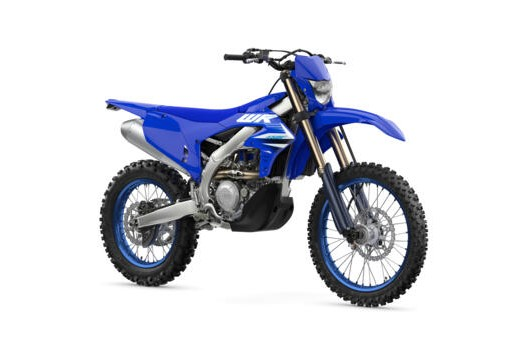

Yamaha WR450F
The Yamaha WR450F is a top-tier enduro machine built for serious off-road performance. Based on the YZ450F motocross bike and tuned for trails, it delivers massive torque, excellent suspension, and enduro-specific features that make it ideal for long, technical rides in rugged terrain.
Specifications
- Engine displacement: 450 cc
- Engine type: 4-stroke, liquid-cooled, single-cylinder DOHC
- Fuel system: Electronic fuel injection
- Transmission: 5-speed wide-ratio
- Tuning: Yamaha Power Tuner app compatibility
Chassis & Suspension
- Frame: Aluminum bilateral beam frame
- Front suspension: KYB 48 mm USD fork, fully adjustable
- Rear suspension: KYB monoshock, fully adjustable
- Front brake: 270 mm disc
- Rear brake: 245 mm disc
Dimensions & Weight
- Seat height: 955 mm
- Wet weight: approx. 119 kg
- Fuel tank capacity: 7.9 liters
Key Features
- High-torque 450cc engine tuned for enduro
- Wide-ratio gearbox for slow and fast trail sections
- Advanced KYB suspension front and rear
- Mapping adjustability via Yamaha Power Tuner app
- Durable, lightweight chassis for demanding terrain
Price: CHF 12,490.–
← Back to overview